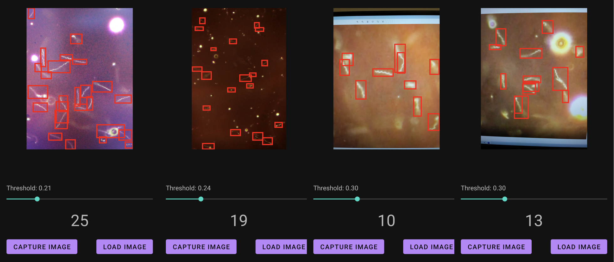
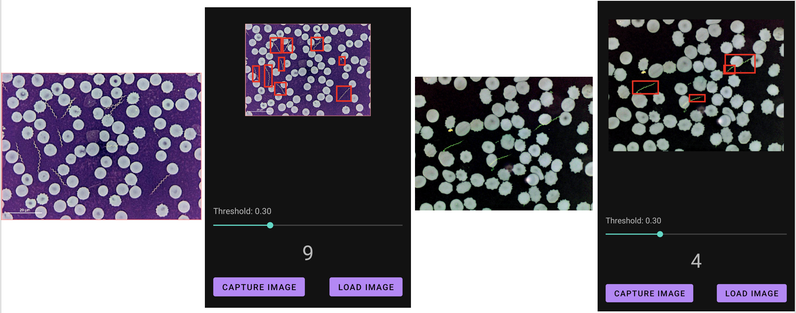
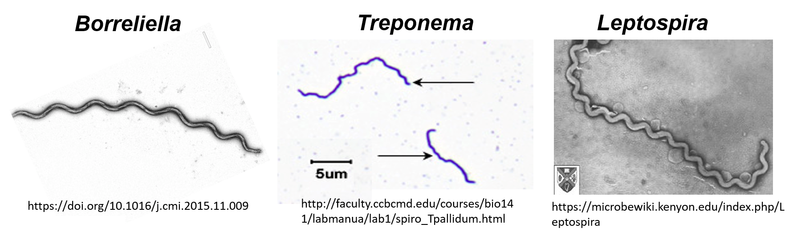
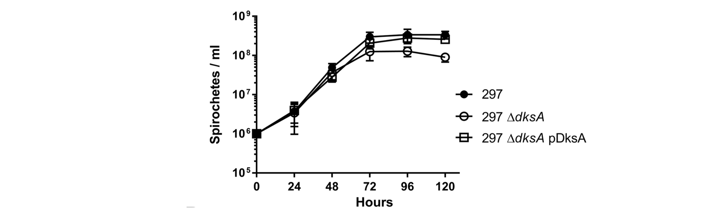
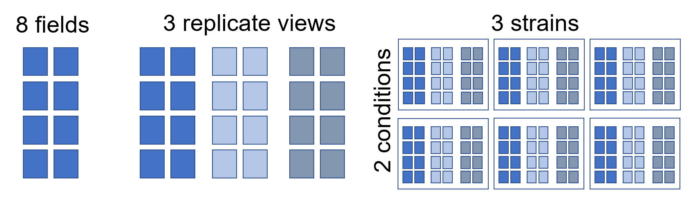
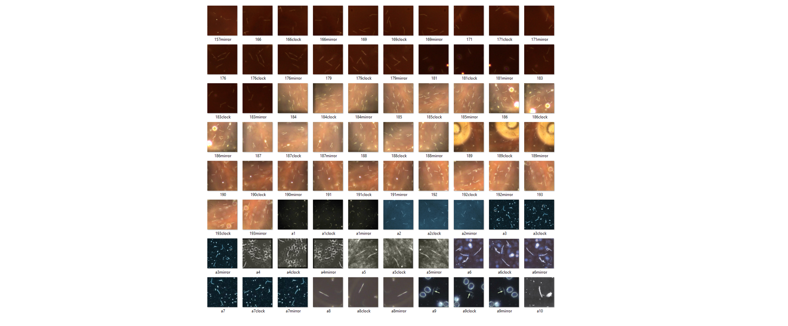

Spirocount is a proof-of-concept demonstration for using deep learning to count the number of spirochetes present in an image. The demonstration app allows users to take pictures from the phone camera or load images from file storage and quickly detect and count spirochete objects within the image. Please visit our app code repository for usage and attribution information. Information about the training object detection model is available in our model training repository.
Object Detection and Microscopy

Using machine vision to identify and count living cells under microscopy is well established and has a wide field of use cases. Machine vision can already be used to identify cancers and infectious diseases. It is used by researchers to count bacterial colonies and eukaryotic cells under microscope, as well as to make measurements of neuronal cell cultures. Yet, there are not any machine vision approaches yet that count spirochete bacteria in an easily accessible way. The wide applicability of machine vision to biomedical science motivated us to learn approaches in machine vision and develop this demonstration project.

The Spirocount app is trained to detect spirochetes, a phylum of bacteria which is characterized by its spiral shaped morphology. Many varieties of spirochetes exist in nature. A few notable genera of Spirochetes Borreliella, Treponema, and Leptospira contain species that cause diseases in humans, including Lyme disease, Syphilis, and Leptospirosis, among others.

Spirocount was conceived to address the spirochete enumeration problem. Spirochetes can grow slowly and reach low densities in laboratory cultures. The low density of spirochetes in cultures requires researchers to manually count spirochetes of each culture under the microscope. This is problematic as manually handling culture, setting up microscopy slides, and counting for each culture can be quite time consuming. This type of work is often automated for studying other organisms that grow dense enough to be measured in other ways.

An experiment to compare growths of strains and conditions can take a lot of time if done completely manually. Spirochetes are counted under the microscope in up to 8 visual fields per sample slide. Typically replicate 3 or more sample cultures are examined to address variability and reproducibility concerns. When comparing strains of bacteria, the comparison is done concurrently to control for variability in culture medium, handling, and other environmental variables. Addressing these requirements, an experiment with 3 strains, 2 different conditions, 3 sample replicates, and 8 field views per sample examination will require 144 individuals to be examined at each point in time. In later stages of these experiments each visual field contain many spirochetes, and it is easy to spend 20 – 30 seconds counting and recording each field. The relative effort required to examine spirochete samples for a relatively small experiment like this makes it expensive to expand strain or conditions to test, or to continuously conduct experiments that closely examines spirochete growth and morphology in response to many variables. This sort of problem exists in many areas of microbiology that requires enumeration or characterization by microbiology. Microscopy has remained the same for many decades and has been slow to become automated because of the complexity of machine vision-based approaches.

The Spirocount app is a proof-of-concept project to apply a convolutional neural network approach to identify and enumerate spirochetes in an image from a microscope. We trained the efficientdet model with about 170 spirochete images using the TensorFlow code library. However, the object detection model used in this demonstration can be improved further with more images. We are also exploring adapting this to new uses such as live imaging and connected devices. Feel free to contact us if you are interested in any of these applications or would like to collaborate!
The app does not collect any personal information, user data, or any other Information from the device. All information remains on the device.